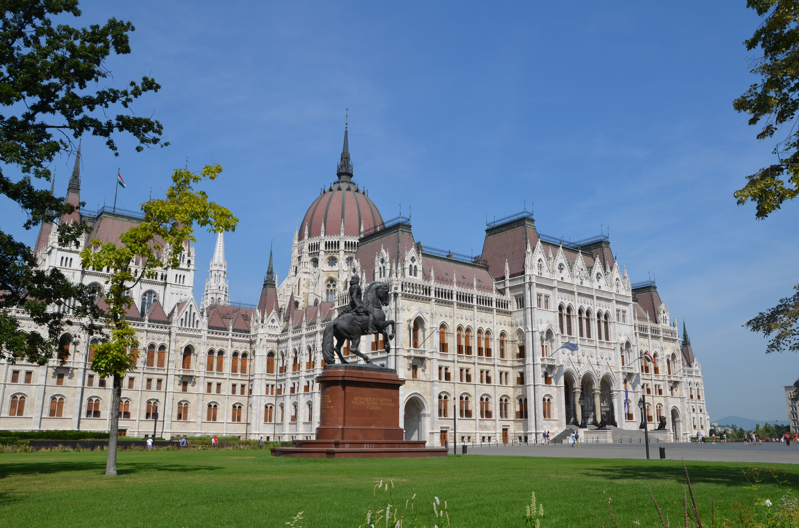

Buda et Pest nous accueillent à Budapest, Hongrie
Avec plus de 1 000 ans d’une histoire à la fois splendide et douloureuse, Budapest, grande cité de la Mitteleuropa, a beaucoup à offrir. Ville cosmopolite autrefois prospère, elle a vu le XXe siècle et ses conflits meurtriers semer la désolation et la terreur. Abîmée par les guerres, asservie par le nazisme, appauvrie par le communisme, la grande dame a retrouvé toute sa fierté à l’occasion de l’adhésion de la Hongrie à l’Union européenne. Aujourd’hui, tournant le dos aux années de plomb, Budapest présente le visage d’une capitale bouillonnante, jeune et pleine de vie. Grâce aux investissements étrangers, les immeubles de style Sécession ont retrouvé une 2de jeunesse, et de nouvelles architectures ont surgi du sol. Le renouveau s’est traduit aussi par la construction de nouvelles infrastructures, comme la ligne n° 4 du métro financée à 90 % par l’UE. Un vaste chantier de rénovation des quartiers officiels, entrepris par le gouvernement national-conservateur depuis une dizaine d'années, restaure le prestige de la capitale tel qu’il rayonnait à la fin du XIXe siècle. Mais, passé le centre touristique de Belváros, la Budapest des banlieues a encore de la peine à masquer les stigmatisations de son passé. Qu’à cela ne tienne, désormais desservie par les compagnies aériennes low cost, la « perle du Danube » est en passe de prendre le relais de Prague ou de Berlin, en ce qui concerne les « lieux où il faut être », grâce à des atouts indéniables : on y danse et on assiste au festival de Sziget sur les bords du Danube au plus fort de l’été, on vient y prendre les eaux au son de la techno dans des bains somptuaires et on y tourne des films à tour de bras. Avec ses musées d’art, ses restos pour tous les goûts et ses ruin pubs où l’on écluse des bières jusqu’au bout de la nuit, Budapest est désormais bien sur l’orbite des capitales « tendance » ! © Routard
